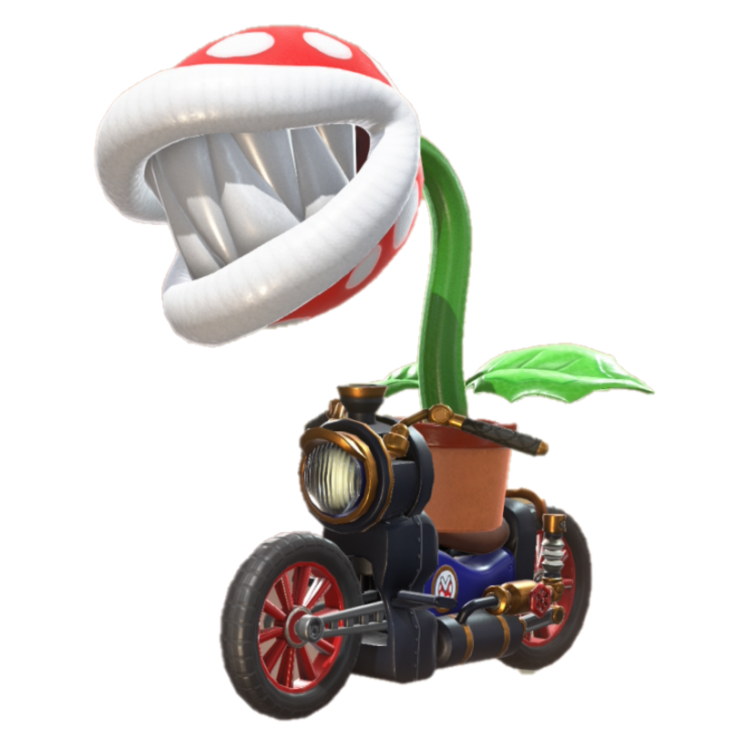

JUAN CUESTA SERIES

Juan Cuesta Series es una serie de torneos que originalmente creé para hacer torneos de broma, pero rápidamente se salió de control contando con 10 entrants en el tercer torneo, viniendo de 2.
Hemos separado los torneos en dos tipos diferentes de torneos, los random y los importantes
Torneos random
Los torneos random son torneos que se harán en días aleatorios de la semana que pueden ir desde ultimate con alguna modificación en las normas hasta a juegos o mods totalmente distintos, contando con entregas en brawl y melee.
Torneos importantes
Los torneos importantes son torneos exclusivamente de ultimate que se harán los sábados, los cuales cuentan más que el resto al ser más stacked.
Unirte
Pulsa el botón de discord para abrir el enlace al discord, una vez dentro en auto-roles podrás elegir qué torneos quieres que te avisemos. Atención, cuando entres se te pondrá un rol para prevenir spam, una vez verifique que eres alguien real que conozcamos se te otorgará acceso. Para cualquier duda, mi discord es @may17787

Rankings
En el servidor tenemos un sistema de ranking en base a las victorias y las importancias de esta y haremos un ranking al inicio del año y en verano para cada juego.